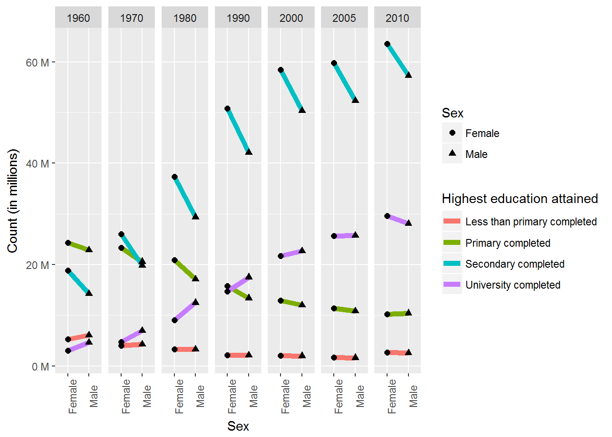

IPUMS visualization in ggplot2
Code for tasks:
library(dplyr);library(ggplot2)
ipums <- read.csv('C:/Users/rt1875bv/Dropbox/DataViz/Data/IPUMS-Sex-EdAttain.csv')
usa <- ipums %>% filter(Country=='United States')
#head(usa)
ggplot(data = usa) + geom_line(aes(x = Sex, y = Count, group = EdAttain, color=EdAttain), size = 2) +
geom_point(aes(x = Sex, y = Count, shape = Sex),size=2) +
facet_grid(.~Year) +
scale_color_discrete(name='Highest education attained') +
theme(axis.text.x = element_text(angle=90)) +
scale_y_continuous(name='Count (in millions)', labels = function(x) paste(x / 1000000,'M')) 
With percents instead of counts:
usa2 <- usa%>%group_by(Year,Sex)%>%mutate(pct = 100*Count/sum(Count))
#head(usa2)
ggplot(data = usa2) +
geom_line(aes(x = Sex, y = pct, group = EdAttain, color=EdAttain), size = 2) +
geom_point(aes(x = Sex, y = pct, shape = Sex,color=EdAttain),size=4) +
facet_grid(.~Year) +
scale_color_discrete(name='Highest education attained') +
ylab('Percent of population') +
theme(axis.text.x = element_text(angle=90))
Here’s an interactive version:
library(plotly)
p <- ggplot(data = usa, aes(x = Sex, y = Count)) +
#geom_point(aes(shape = Sex),size=2) +
geom_line(aes(group=EdAttain, color = EdAttain))+
facet_grid(.~Year) +
theme(axis.text.x = element_text(angle = 90)) +
scale_y_continuous(name='Count (in millions)', labels = function(x) paste(x / 1000000,'M')) +
scale_color_discrete(name='Educational attainment')
ggplotly(p,tooltip=c('x','y'),width=800,height=800)